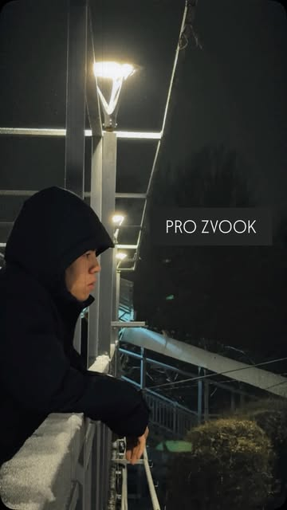
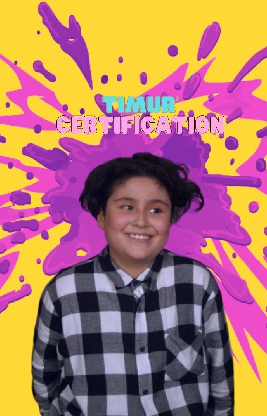
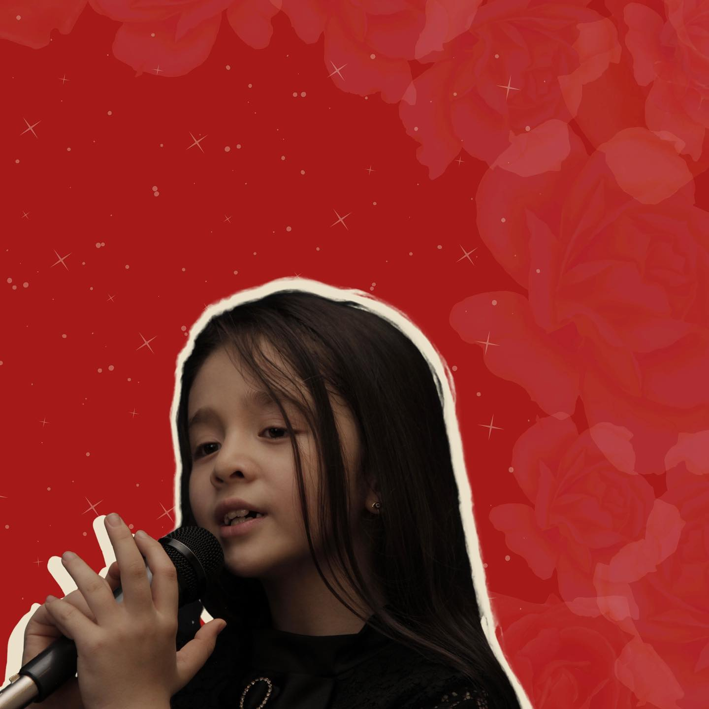
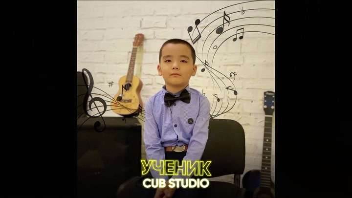
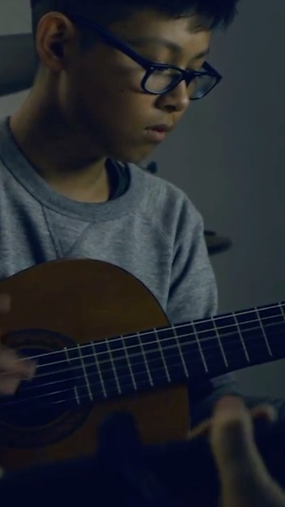
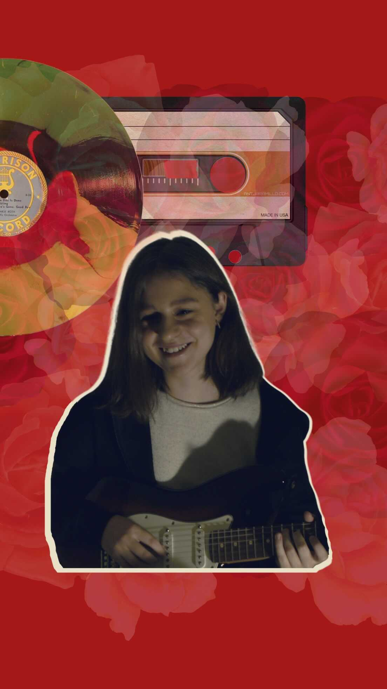
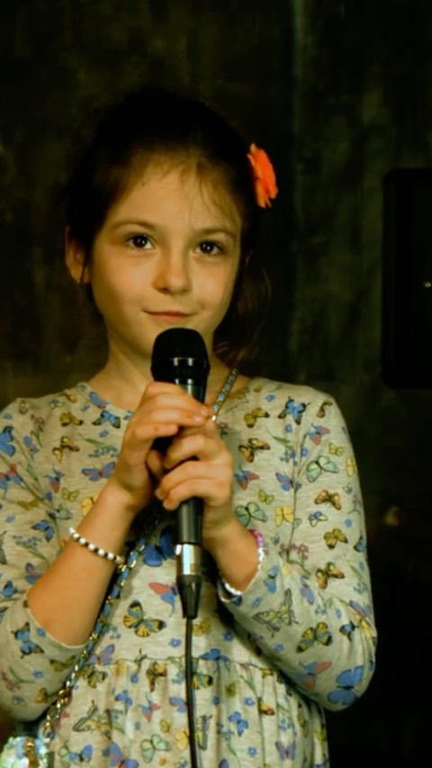

01 / 03
Вокал
Распевка, дыхание, а потом песни — около 70% урока ты поёшь, и песни выбираешь сам. Снимаем зажимы и ищем твой тембр, а не копию чужого.
до-ми-соль-ми-до ♪
узнать свой тип голоса →Музыкальная эко-системаАлматыс 2020
Вокал • Гитара • Фортепиано
дети и взрослые · индивидуально · онлайн · студия звукозаписи
( 01 ) — манифест
Здесь можно звучать по-своему, становиться смелее и получать удовольствие от музыки.
— команда SANART
«SANART всегда был не про “уроки”. Про людей, которые приходят к людям и начинают звучать. Иногда тихо. Иногда мощно. Но всегда честно и безопасно.»
из поста SANART, 31.12.2025
подписчиков
в Instagram
рейтинг в 2ГИС
по 92 оценкам
отзывов учеников
в 2ГИС
год, с которого
мы звучим
( 02 ) — что звучит у нас
01 / 03
Распевка, дыхание, а потом песни — около 70% урока ты поёшь, и песни выбираешь сам. Снимаем зажимы и ищем твой тембр, а не копию чужого.
до-ми-соль-ми-до ♪
узнать свой тип голоса →02 / 03
Акустика, классика, электрогитара и укулеле. Аккорды, бой, перебор и любимые песни — сначала для души, потом для зала PRO SANART.
проведи по струнам — это Em ✶
03 / 03
Нотная грамота без скуки, гармония, аккомпанемент себе и друзьям. Клавиши, которые перестают пугать.
клавиши A–K на клавиатуре тоже работают
( ♪ ) — интерактив
Спой самую низкую ноту, самую высокую и скажи пару слов. По диапазону и высоте речи мы подскажем, на что похож твой голос: бас, баритон, тенор, контральто, меццо-сопрано или сопрано.
звук обрабатывается прямо в браузере и никуда не отправляется
Тяни самую низкую ноту
на «а-а-а», спокойно, без хрипа
Нажимай клавиши и подпевай
отметь самую низкую и самую высокую ноту, которые удобно спеть
низ: — · верх: —
похоже, у тебя
Это ориентир, а не диагноз. Тип голоса определяется не только диапазоном, но и тембром, переходными нотами и тем, где голосу удобно жить. У нетренированного голоса диапазон обычно уже — за пару месяцев занятий он раскрывается. Если тебе меньше 15 лет, голос ещё формируется. Фальцет и шум вокруг тоже могут сбить результат. Точно скажет педагог на пробном уроке.
диапазоны: New Grove Dictionary of Opera, Wikipedia
( 03 ) — путь ученика

Знакомимся, слушаем, где ты сейчас, и подбираем педагога под тебя. Свою любимую песню споёшь уже на первом уроке.
страшно? это нормальноДыхание, опора, первые «вау, это я?». «Здесь учишься не петь правильно, а слышать себя», — пишет ученица в 2ГИС.
первые мурашкиЗаписываешь песню в нашей студии звукозаписи или дуэт с педагогом для рубрики «Пой со мной».
твой трек в лентеЖивые вечера, концерты и съёмки выступлений, где ученики поют в кругу своих.
ты уже на сцене!Ты рассказываешь свою историю — и кто-то решается прийти благодаря тебе.
круг замыкается ♡( 04 ) — результат
потяни разделитель — посмотри, как меняется звук
( 04½ ) — реальные кейсы
Истории из постов SANART и отзывов учеников в 2ГИС. Листай колоду: тяни карточку или жми стрелки.

Тимурвокал · Instagram

Асминдети · Instagram
Алтынай А.вокал · 2ГИС

АнсарInstagram
Karlygash B.вокал · 2ГИС

МаргуланInstagram
Санжар Ә.вокал · 2ГИС

Юксельвокал · Instagram
Aruzhan N.вокал · 2ГИС

Эмилидети · Instagram
Назым Д.вокал · 2ГИС
Kamilaвокал · 2ГИС
( 05 ) — рубрика
Наши ученики рассказывают, зачем пришли в музыку и что она в них изменила.
( 06 ) — рубрика «Пой со мной»
Педагог поёт куплет — ты записываешь дуэт у себя дома. Лучшие дуэты попадают в сторис SANART.
наведи на трек — пластинка сменится
( 06½ ) — люди SANART
основатель · вокал · клавиши
Его зовут Баха и Бахито. «С ним спокойно, понятно и совсем не страшно ошибаться» — из отзыва в 2ГИС.
состав собран по постам и отзывам 2020–2025 · кто ведёт сейчас — уточняй в WhatsApp
( 07 ) — что говорят ученики
5,0 ★★★★★ 92 оценки · 57 отзывов в 2ГИС
Здесь учишься не «петь правильно», а слышать себя — и постепенно находишь свой голос.
Это видео хочется пересматривать и пересматривать. Такая живая душевная атмосфера.
Педагогов много разных, метч обязательно найдётся под каждого.
Молодцы ребята, у вас атмосфера мощная 🔥 хочу к вам
записки можно перетаскивать
( 08 ) — первый шаг
Оставь заявку на пробный урок — откроется WhatsApp с готовым сообщением, и мы подберём педагога и время.